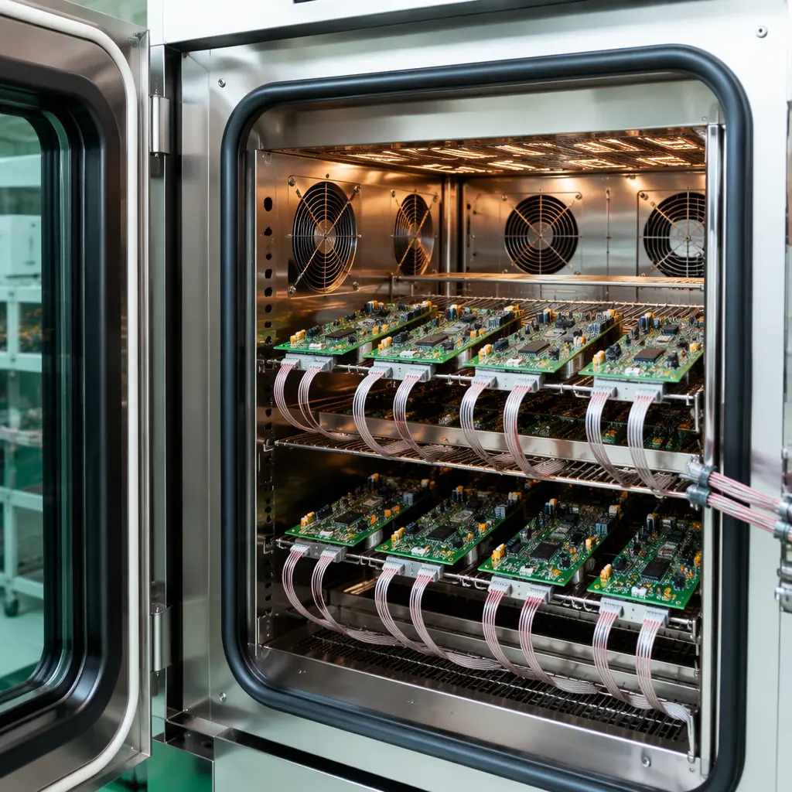
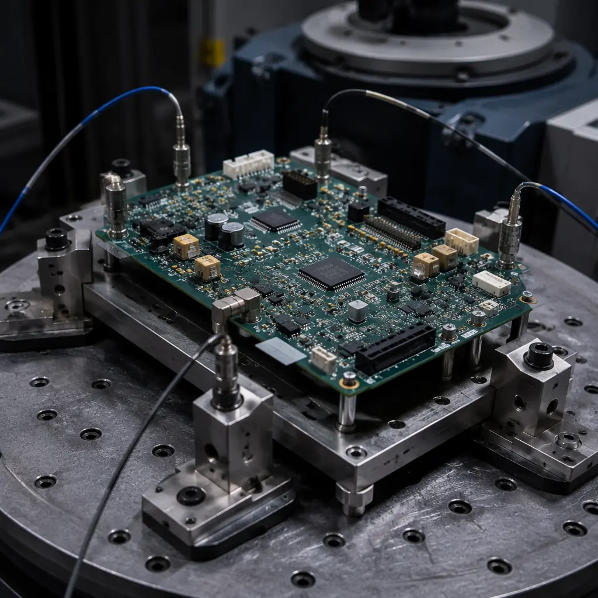
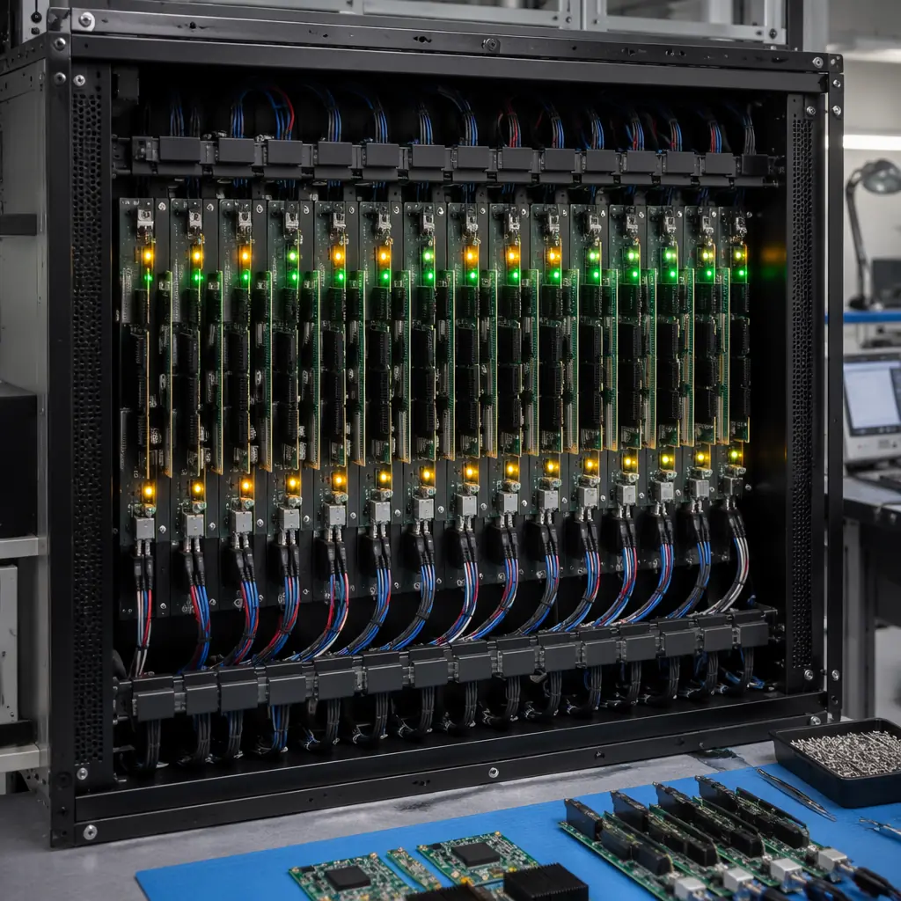

Every PCB assembly has an infant mortality zone — the first 50 to 200 operating hours where latent manufacturing defects, marginal components, and process escapes reveal themselves as field failures. Burn-in testing and environmental stress screening (ESS) are the two primary methods for pushing assemblies through this zone before they leave the factory. The decision to burn-in is a cost-benefit equation: the cost of testing, versus the cost of a field failure multiplied by the probability that a given assembly harbors a latent defect.
We operate a 1,200㎡ dedicated testing facility in Shenzhen with 12 thermal chambers capable of -70°C to +180°C cycling, 6-axis random vibration tables, and automated functional test integration. Here is the framework our reliability engineers use to determine when burn-in pays for itself — and when it does not.
Decision rule: If the cost of a single field failure exceeds $500 in warranty claims, rework, and reputation damage, and your production volume exceeds 1,000 units per year, burn-in screening of 100% of production units will almost certainly have a positive return on investment. The math: a 2% latent defect rate × 1,000 units × $500 per failure = $10,000 annual failure cost. Burn-in at $15 per board × 1,000 units = $15,000 — nearly break-even on hard costs alone, without pricing in the avoided reputation damage, customer downtime, and requalification expense that a single field failure triggers in regulated industries.

HALT vs HASS: The Two Approaches to Stress Screening
Highly Accelerated Life Testing (HALT) and Highly Accelerated Stress Screening (HASS) are often conflated. They serve fundamentally different purposes and occur at different points in the product lifecycle:
| Parameter | HALT | HASS |
|---|---|---|
| Purpose | Discover design weaknesses — find the failure limits | Screen production units — weed out manufacturing defects |
| When | During design validation, before production | During production, on every unit or sampled lots |
| Stress Level | Beyond specification — push to destruction | Within operating limits — must not damage good units |
| Sample Size | 3–6 prototype units | 100% of production (high-reliability) or statistical sampling |
| Temperature Range | -100°C to +200°C (step stress to failure) | Typically -40°C to +125°C (within spec margins) |
| Vibration | Random 6-DOF, 5–60 Grms (to destruction) | Random, typically 5–20 Grms (non-damaging) |
| Output | Operating and destruct limits, design margin data | Pass/fail: defective units identified and removed |
HALT happens once during product development. It tells you the weakest component, the poorest solder joint design, and the first failure mode — so you can fix it before production begins. HASS happens on every production unit (for high-reliability programs) or on a statistical sample. It applies stress levels calibrated from the HALT data: high enough to precipitate latent defects into actual failures within hours, but low enough that a properly manufactured unit will survive without accumulated damage.
Common procurement mistake: specifying "HALT testing on production units" or "HASS during design validation." These are different tools for different phases. Confusing them in a purchase order signals to your supplier that you do not understand reliability engineering — and worse, it can lead to good production units being destroyed by HALT-level stress or design weaknesses being missed by HASS-level screening that never pushes hard enough to find them.
Thermal Cycling: The Workhorse of ESS
Thermal cycling is the most common and cost-effective ESS method. Assemblies are cycled between temperature extremes while powered and monitored. The cycling accelerates solder joint fatigue, package delamination, wire bond failures, and PCB delamination — all driven by the coefficient of thermal expansion (CTE) mismatch between materials that expand and contract at different rates.
The key parameters in a thermal cycle profile:
Temperature range (ΔT)
The wider the range, the more effective the screening. A cycle from -40°C to +85°C (ΔT = 125°C) screens approximately 4× faster than a cycle from 0°C to +70°C (ΔT = 70°C), per the Norris-Landzberg acceleration model. For high-reliability automotive and aerospace, specify -40°C to +125°C minimum. For commercial/industrial, -20°C to +85°C is typical and adequate.
Ramp rate
Faster transitions create more thermal shock and detect defects sooner. 10–15°C per minute is typical for HASS screening. Below 5°C/minute, the stress is not "accelerated" — it is a slow simulation of real-world diurnal temperature swings, which takes weeks to detect defects that a fast ramp finds in hours.
Dwell time
Time at each temperature extreme. Dwell must be long enough for the entire assembly — including the thermal mass of large BGAs, heatsinks, and thick copper layers — to reach equilibrium. Our standard dwell is 15 minutes at each extreme, verified by thermocouples on the largest BGA package and the board center.
Number of cycles
This is the parameter most directly tied to cost. Each thermal cycle takes 45–90 minutes of chamber time depending on ramp rate and dwell. A 20-cycle profile at 60 minutes per cycle = 20 hours of chamber occupancy. For reference: our facility processes up to 200 assemblies simultaneously in a single chamber run, so the per-board cost of a 20-cycle burn-in can be as low as $12–18 at production volumes.

Vibration Screening: Catching Intermittent Connections
Thermal cycling primarily stresses solder joints and material interfaces. Vibration screening primarily stresses connectors, press-fit components, socketed devices, and any mechanical joint that relies on normal force rather than metallurgical bond. The two stress types are complementary — assemblies that pass thermal cycling can still fail vibration, and vice versa, because the failure mechanisms are different.
Random vibration (6-degree-of-freedom) is preferred over swept-sine vibration for ESS because it excites all resonant frequencies simultaneously. A swept sine test spends most of its time at frequencies where nothing resonates, and milliseconds at frequencies where a marginal connection rattles into intermittent contact. Random vibration finds those weaknesses in minutes rather than hours.
Typical HASS vibration profiles range from 5 to 20 Grms — within the operating vibration specification for most industrial and automotive electronics. The assembly is powered and functionally monitored during vibration. Any interruption — even a single clock cycle glitch that self-recovers — is a failure. These are the defects that thermal cycling alone will never catch: a cold solder joint on a connector that makes contact at room temperature but opens under vibration, a press-fit pin that walked out during reflow and has marginal normal force, or a cracked MLCC that has not yet shorted but generates noise under mechanical excitation.
Burn-In Duration: How Long Is Enough?
The infant mortality curve for electronics follows a Weibull distribution with a shape parameter (β) typically between 0.3 and 0.7 — meaning the failure rate starts high and decreases over time. Most latent defects become detectable failures within the first 48 hours of powered operation at elevated temperature. Extending burn-in beyond 168 hours (7 days) yields rapidly diminishing returns — the failure rate approaches the random-failure region of the bathtub curve, where each additional hour finds progressively fewer defects.
Industry-specific burn-in norms:
| Industry | Typical Burn-In Duration | Temperature | Standard Reference |
|---|---|---|---|
| Consumer Electronics | 4–8 hours (or skip entirely; sample-based audit) | +55°C | Internal specification |
| Industrial Control | 24–48 hours | +70°C | IEC 61131-2, IPC-9701 |
| Automotive (Cabin) | 48–72 hours powered cycling | -40°C to +85°C | AEC-Q100 Grade 3, LV124 |
| Automotive (Under-Hood) | 100–168 hours | -40°C to +125°C | AEC-Q100 Grade 1, LV124 |
| Medical (Life-Sustaining) | 168 hours minimum | +55°C to +70°C | IEC 60601-1, ISO 13485 process validation |
| Aerospace / Defense | 100–200 hours | -55°C to +125°C | MIL-STD-883 Method 1015, MIL-STD-810 |
| Telecom Infrastructure | 72–96 hours | +55°C to +85°C | Telcordia GR-63-CORE, NEBS |
These durations are starting points, not absolutes. The correct burn-in duration for your specific assembly is determined by running HALT on prototypes, identifying the weakest failure mode, and calculating how many thermal cycles at production ESS conditions are required to precipitate that failure mode in a defective unit. A competent reliability engineer can make this calculation from HALT data. A supplier that applies a fixed 48-hour burn-in to every assembly regardless of design is not doing reliability engineering — they are following a checklist, and your field failure rate will reflect the difference.
Functional Monitoring During Burn-In: Powered vs Unpowered
Unpowered burn-in — assemblies sitting in a hot chamber, unpowered, then tested after cooling — is better than nothing. But it misses the most common failure modes because it does not exercise the circuits. Powered burn-in with functional monitoring catches an additional 30–60% of defects according to reliability engineering literature, because it stresses the assembly electrically while thermal and mechanical stress are applied simultaneously.
The monitoring strategy depends on the assembly complexity:
Power-On Only (Basic)
Assembly is powered at nominal voltage. Current draw is monitored — a deviation from nominal indicates a short, open, or latch-up condition. This catches catastrophic failures but not performance degradation. Cost: approximately $2–5 per board in fixture and monitoring hardware. Suitable for low-complexity, high-volume consumer assemblies.
Functional Exercising (Intermediate)
Assembly runs a diagnostic test loop that exercises key interfaces: memory read/write, communication bus traffic, I/O toggling. The test loop logs errors with timestamps. An assembly that passes 48 hours of thermal cycling but accumulates 3 memory parity errors during that period has a marginal DRAM interface — it will fail in the field. Cost: approximately $8–15 per board for custom test fixture and software development, amortized over production volume. Standard for automotive and industrial assemblies.
Full System Simulation (Advanced)
Assembly operates in a test rack that simulates its end-use environment: sensor inputs, actuator loads, communication with other system modules. Performance parameters — ADC noise floor, PLL lock time, Ethernet BER — are measured at each temperature extreme and compared against pre-burn-in baselines. Degradation of any parameter by more than the acceptable margin triggers a failure. Cost: $30–80 per board in NRE and chamber integration. Required for medical life-sustaining devices, aerospace flight hardware, and automotive safety-critical ECUs (ASIL C/D).
The level you specify depends on what a field failure costs. A consumer IoT sensor that costs $12 to replace at retail does not justify L3 monitoring. A medical infusion pump PCB where a field failure means patient harm justifies every dollar of L3 monitoring — and the regulatory submission will be stronger for having that data. See our medical device PCB guide for the full validation framework.
Specifying ESS on Your Purchase Order
Procurement teams often write "100% burn-in required" on a PO without specifying the burn-in profile. That is equivalent to telling a machine shop "tight tolerances" without providing numbers — the supplier will interpret it in the way that minimizes their cost and liability, not the way that maximizes your reliability.
A proper ESS specification on a purchase order includes at minimum:
Stress type and profile
"Thermal cycling: -40°C to +125°C, ramp ≥10°C/min, dwell 15 min at each extreme, 40 cycles, powered at nominal +5V with functional monitoring per attached test procedure TP-ESS-001."
Monitoring requirements
"L2 functional exercising: assemblies shall run diagnostic loop continuously; any error logged during cycling constitutes a failure. Error log to be included in shipment documentation."
Acceptance criteria
"Zero functional failures permitted during ESS. Post-ESS electrical test per IPC-A-600 Class 2 acceptance criteria. Any unit failing ESS or post-ESS test shall be root-caused with 8D report provided to buyer within 5 business days."
Data delivery
"ESS lot report: chamber temperature profile chart (thermocouple data), powered current draw log for each serial number, pass/fail summary, and post-ESS functional test results. Deliver with shipment."
Cost transparency: A 40-cycle thermal ESS with L2 monitoring on 100% of production units adds approximately $12–22 per board at volumes above 500 units. The cost comes from chamber time (amortized equipment + electricity), test fixture development, and technician labor for loading/unloading and data review. This number is useful for your own budget calculations — suppliers should be able to explain their burn-in cost as a separate line item rather than burying it in the unit price.

When Not to Burn-In
Burn-in is not free, and it is not always necessary. Three scenarios where specifying burn-in is likely wasted cost:
Mature, high-volume consumer products with established process capability. If your assembly has been in production for 5+ years, with a Cpk above 1.67 for critical processes (solder paste printing, reflow, AOI), and your field return rate is below 0.1%, burn-in is finding almost nothing. The money is better spent on process monitoring — Solder Paste Inspection (SPI) catch rate, AOI false-call analysis, and in-process functional test — which prevents defects rather than screening for them after the fact.
Low-complexity, low-consequence assemblies. A 2-layer LED driver board with 20 components and a field failure consequence of "customer replaces the light bulb" does not justify burn-in. The $12 per board in ESS cost exceeds the $8 replacement cost. Statistical sampling — test 5 boards per lot of 500 — is adequate to detect a process shift without burning money on every unit.
Assemblies where burn-in itself introduces risk. Every thermal cycle incrementally ages solder joints. For assemblies designed for a 20-year service life, burning through 40 thermal cycles that represent 2 years of accelerated aging in the field reduces remaining service life by 10%. If your reliability analysis shows that the assembly already has a 30-year predicted life and the application requires 15, this is fine. If the predicted life is 18 years and the application requires 15, those 40 cycles matter. A reliability engineer should perform this calculation — do not guess.
Making the Decision: A Procurement Framework
The burn-in decision can be structured as a sequential gate:
Gate 1: Is a field failure unacceptable? If the answer is yes — because it threatens safety (medical, automotive braking, flight control), interrupts revenue (telecom infrastructure, data center), or triggers regulatory non-compliance — proceed to Gate 2. If no, consider skipping burn-in and relying on process control plus sample-based audit testing.
Gate 2: Is the latent defect rate unknown or above target? If you have production data showing a stable field return rate below 0.05% for 12 consecutive months, and you trust that data, burn-in may not add value. If your product is new, your production process changed, or your supplier changed, the latent defect rate is unknown — proceed to Gate 3.
Gate 3: Is HALT data available to calibrate the ESS profile? Without HALT data, you are guessing at temperature range, cycle count, and vibration level. If HALT has not been performed, run it on 3–6 prototype units first, then design the ESS profile from failure limit data. If HALT cannot be performed (budget, schedule), use the industry-standard profiles in the table above as a conservative starting point — but acknowledge that you are operating with incomplete information.
This framework prevents the two most common reliability engineering mistakes: burning-in assemblies that do not need it (wasting money), and not burning-in assemblies that do (accepting preventable field failures). For a broader discussion of PCB testing strategies including AOI, X-ray, and ICT, see our complete testing methods comparison. For the quality documentation framework that supports reliability data, see our certifications and compliance guide.